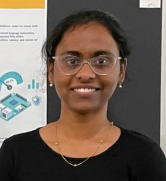
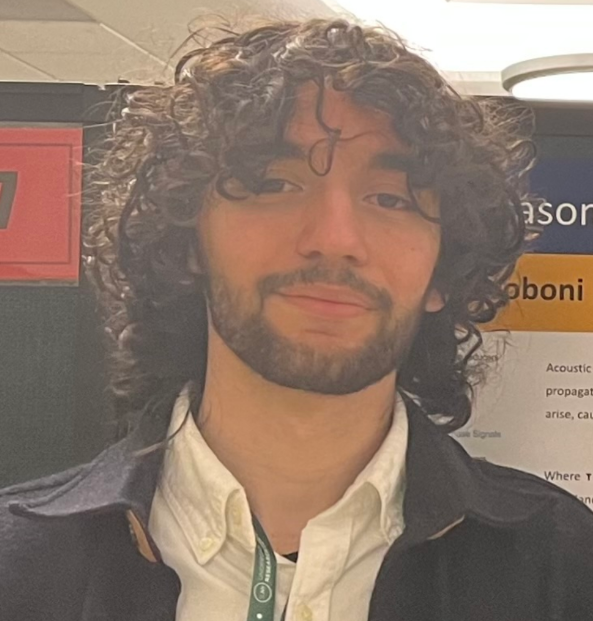

NanoWireless Lab is a growing research group. We are actively recruiting students and collaborators who want to help shape the lab from the ground up.
Dr. Sangwan is the founding director of the NanoWireless Lab at SUNY Polytechnic Institute. His research addresses fundamental challenges in wireless communication and sensing at the nanoscale — from nanophotonic and plasmonic links to wireless-powered biomedical implants and brain-machine interfaces.
His work is motivated by the belief that the next generation of healthcare, human-computer interaction, and connected devices will require wireless infrastructure that operates at dimensions and in environments — inside the body, on a chip, across a neural interface — where today's radio technology cannot reach.
Dr. Sangwan is committed to building an inclusive, collaborative, and intellectually rigorous research environment where students develop deep technical expertise alongside strong communication and independent thinking skills.


We are actively looking for motivated Graduate and Undergraduate students with a strong background in electrical engineering, computer science, or applied physics to tackle fundamental challenges in nanoscale wireless systems.
Inquire About Positions